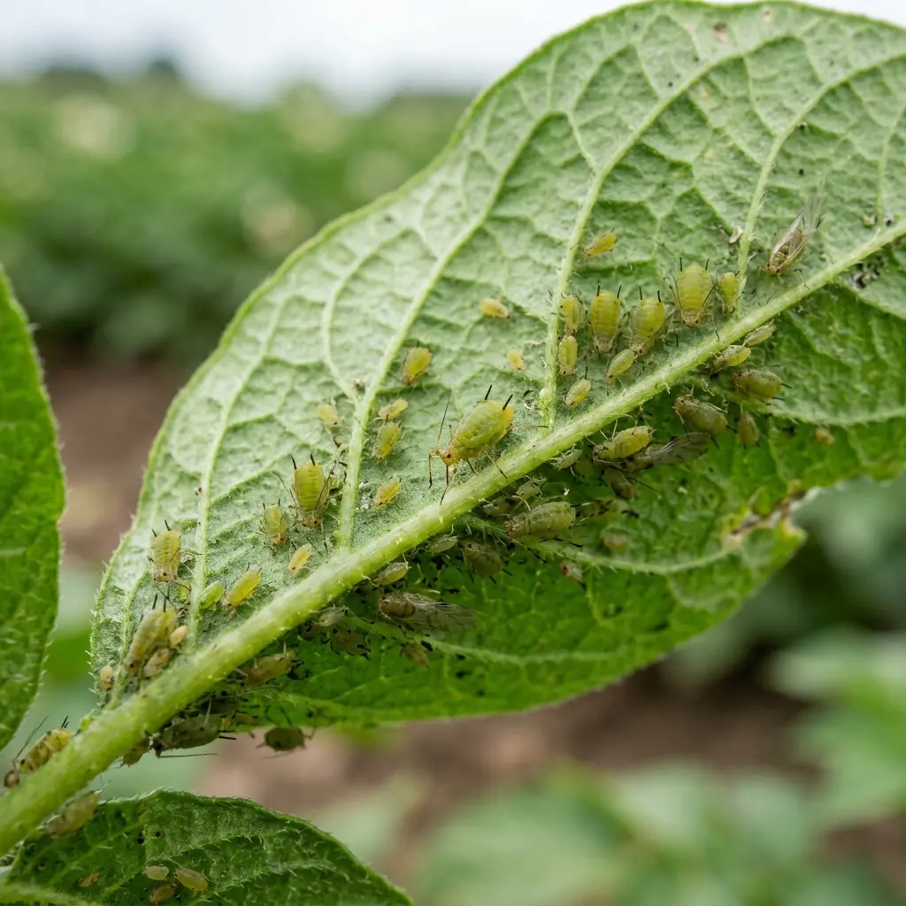
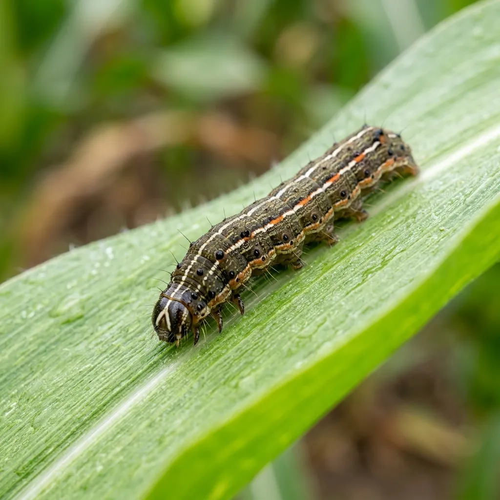

Stackly Farmer Portal
Pest Library & Diagnostics
Comprehensive database to identify and treat common agricultural threats.
AI Pest Diagnostics
Upload a photo of an infected leaf or insect. Our AI will instantly identify the threat and recommend treatments.
Known Threats Library

Aphids
Small sap-sucking insects that stunt plant growth and transmit viral diseases. Leaves may curl or yellow.
View Treatments
Fall Armyworm
Highly destructive pest primarily affecting maize. Caterpillars feed aggressively on leaves and whorls.
View Treatments
Stem Borer
Larvae bore into the stems of rice and maize, causing "dead hearts" or whiteheads. Severe yield loss.
View TreatmentsWhitefly
Tiny white winged insects that suck sap and spread leaf curl viruses, especially in cotton and tomatoes.
View TreatmentsRed Spider Mite
Microscopic mites that cause webbing and yellow stippling on leaves during hot, dry weather.
View TreatmentsDesert Locust
Swarming grasshoppers capable of devouring entire fields in hours. Requires community-level response.
View Treatments